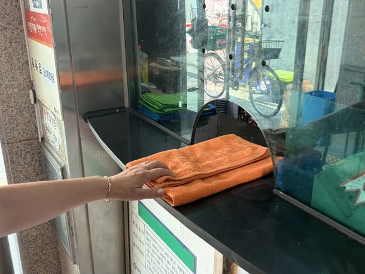

"우리도 할 말 많죠"…'여탕 수건비' 목욕탕 업주들의 항변 : 네이트 뉴스

“여자 손님들에게 수건 개수를 제한하거나 별도로 돈을 받는 게 차별처럼 보일 수는 있죠. 하지만 목욕탕을 운영하는 입장에서는 여탕의 수건 분실률이 높은 게 사실이라, 어쩔 수가 없어요.”
18일 오전 서울 광진구 자양동의 한 목욕탕 직원 김모(63·남) 씨가 한숨을 내쉬며 말했다.
이 목욕탕은 여성 고객에게 수건을 2장만 나눠준다.
그는 “분실이 잦아지면 수건을 새로 구매해야 하는데, 요즘 수건 한 장에 1500~1800원 씩이고 부담이 커서 부득이 여성 고객에게는 수건 개수를 제한하고 있다”고 했다.
서울 지역 대부분의 목욕탕은 여탕의 수건 개수를 제한하거나,
별도의 요금을 부과하는 방식으로 운영되고 있었다.
여탕 내 헤어드라이어를 사용하기 위해서는 별도 요금을 내는 경우도 있었다.
인권위는 이런 관행을 성차별로 봤다.
분실 문제를 여성 손님 전체에게 부담시키는 행위는 ‘성차별에 관한 고정관념 또는 일반화에 기인한 관행’이라는 것이다.
그러면서 보증금을 받거나 반납 절차를 강화하는 등 다른 예방책을 고려할 수 있다고 덧붙였다.
서울 은평구 갈현동에서 53년째 목욕탕을 운영한 김원기(80·남) 씨는 여성 고객의 수건 개수에 제한을 두고, 별도의 드라이기 사용 요금을 받는다.
그는 “여성 고객들은 남성보다 수건 사용량이 많고, 분실률도 높기 때문”이라고 말했다.
김 씨는 “수건 세탁비만 한 달에 100만~150만원이 들고, 수도세와 전기세를 비롯한 공과금을 내면 사실상 남는 것도 없다”고 하소연했다.
보증금을 받거나 반납 절차를 강화하라는 인권위의 의견에 대해서도 업계는 회의적이다.
업장 운영을 고려하지 않은 대안이라는 것이다.
댓글
수집 당시 댓글 7개
인터넷 · 2 일 전
여탕 수건 분실율 : 80% 남탕 수건 분실율 : -140% (가져온거 두고감)
hakuhaku · 2 일 전
회수율아니야?
렙호구 · 2 일 전
"업장 운영을 고려하지 않은 대안이라는 것이다."
mylovingcity · 2 일 전
인권위를 운영하는데 연간 세금이 400억이 들어간다고함
joykala · 2 일 전
도동년들이 많아
도산이선생 · 1 일 전
분실이라고 표현하지마세요 그냥 사실을 말해요
긍정왕오키도킹 · 1 일 전
두개면 충분하구만